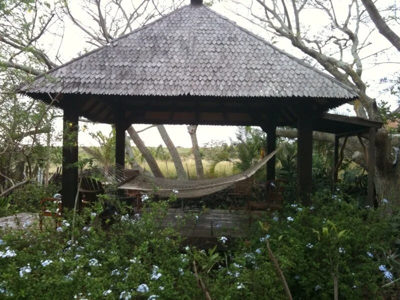
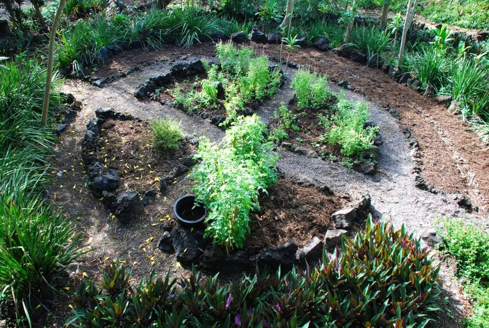
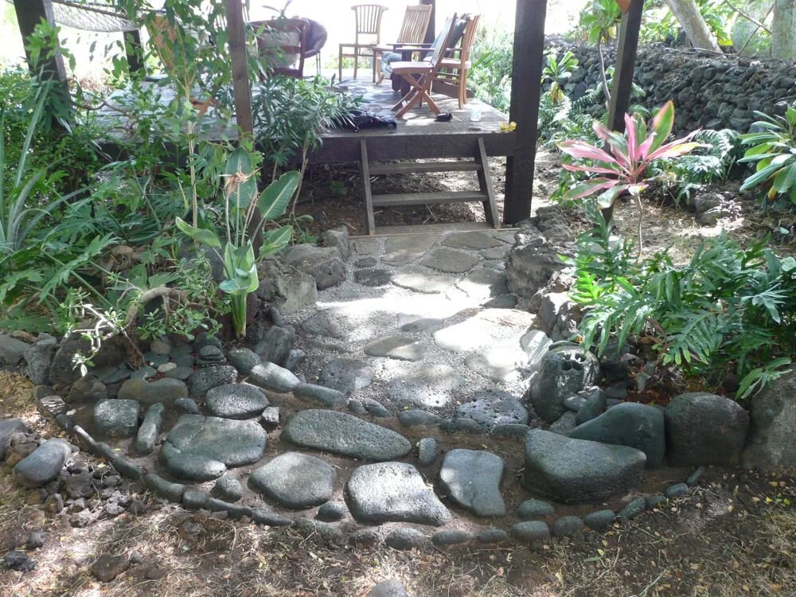
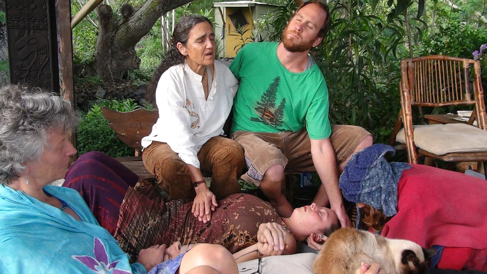

Personal retreats
Individual retreat possibilities shaped around time, attention, and being with the land.
In the district of Kaʻū, Hawaiʻi Island, Rashani stewards an earth-based sanctuary shaped by plants, stone, shared labor, inquiry, and an evolving community of visitors.
Explore the land ↓
THE LIVING DHARMA
Kipukamaluhia is a place where land stewardship and contemplative practice meet. Its landscape brings together grassland, forest, gardens, and spaces for private or group retreat.
Rashani and the people who have spent time there have planted thousands of trees and plants over the years. The sanctuary is an evolving collaboration with the land, rather than a static retreat destination.
View the sanctuary archive


Individual retreat possibilities shaped around time, attention, and being with the land.
Shorter opportunities for quiet inquiry and the experience of Kipukamaluhia.
Land stewardship as a practice of service, shared life, and direct experience.
Inquiry and connection through Rashani's facilitated online gatherings.
Visit Rashani's original website to confirm current offerings, schedules and availability.